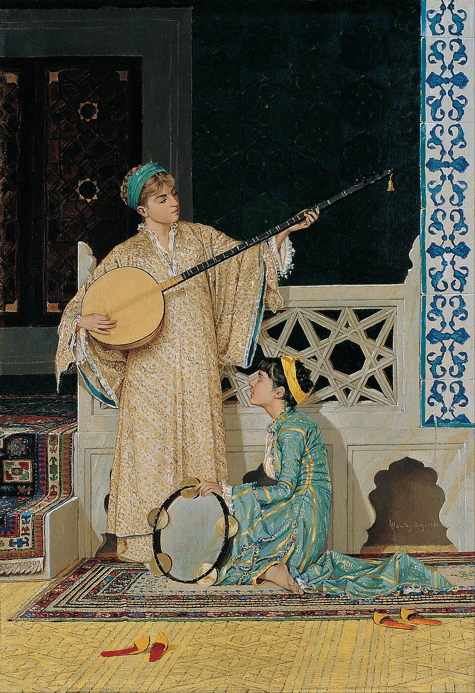

Music
Albums and playlists that have a hold on me right now.

Two Musician Girls, 1880 · Osman Hamdi Bey
Osman Hamdi Bey (1842–1910) painted two young women with instruments in 1880 — a quiet domestic scene that carries the same absorbed attention to sound that good listening requires. Music as contemplation, not performance.
Currently on repeat
Meena Kumari was the great actress — but in 1981 she revealed herself as a poet too. This is her voice stripped of performance, just words and a single moon.
From the Gaman soundtrack, 1978. A ghazal about a night spent entirely inside someone's memory. The kind of song that makes late nights more meaningful.
Lata at her most restrained. From 1963, from a film most people have forgotten — which somehow makes it feel more private.
Tahira Syed holds the word fasane — stories — like it weighs something. A ghazal about what stays after someone leaves.
From Coke Studio Season 10, 2017. Faasle means distances — and QB's voice closes every one of them. A song that builds slowly and then stays with you.
Nayyara Noor, 1994. One of the great voices of Urdu music, at her most unguarded. The kind of rendition where the singer and the lyric have become the same thing.
A ghazal built on the idea that grief is personal — yours to carry, mine to carry. The title says everything before the first note plays.
English
Bryan Adams, 1983. One of the great rock ballads — simple, direct, no ornamentation. Adams had a way of making sincerity sound like strength.
Benson Boone, 2025. The title does all the heavy lifting before the song even starts. What follows is two and a half minutes of exactly that feeling — delivered without flinching.
AC/DC, 1979. Three chords and total conviction. Bon Scott's last album with the band — and one of the greatest rock songs ever recorded.
Bon Jovi, 1986. A song about holding on when everything is working against you. Forty years on and that chorus still hits like the first time.